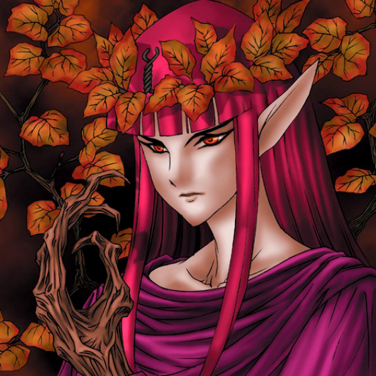

Queen of Autumn Leaves

STATS
ATK: 1800
DEF: 1500DECK COST
Deck Cost per Card: 33Fusion List (20 Possible Fusions)
- Queen of Autumn Leaves + Ancient Jar = Mystical Sand
- Queen of Autumn Leaves + Curse of Dragon = B. Dragon Jungle King
- Queen of Autumn Leaves + Dark King of the Abyss = Rose Spectre of Dunn
- Queen of Autumn Leaves + Dig Beak = Nekogal #2
- Queen of Autumn Leaves + Dragon Statue = B. Dragon Jungle King
- Queen of Autumn Leaves + Dragon Zombie = B. Dragon Jungle King
- Queen of Autumn Leaves + Feral Imp = Rose Spectre of Dunn
- Queen of Autumn Leaves + Fungi of the Musk = Rose Spectre of Dunn
- Queen of Autumn Leaves + Haniwa = Mystical Sand
- Queen of Autumn Leaves + Harpie's Pet Dragon = B. Dragon Jungle King
- Queen of Autumn Leaves + Little Chimera = Nekogal #2
- Queen of Autumn Leaves + Milus Radiant = Nekogal #2
- Queen of Autumn Leaves + Monster Eye = Rose Spectre of Dunn
- Queen of Autumn Leaves + Mountain Warrior = Nekogal #2
- Queen of Autumn Leaves + Muka Muka = Mystical Sand
- Queen of Autumn Leaves + Mystery Hand = Rose Spectre of Dunn
- Queen of Autumn Leaves + Obese Marmot of Nefariousness = Nekogal #2
- Queen of Autumn Leaves + Pot the Trick = Mystical Sand
- Queen of Autumn Leaves + Silver Fang = Nekogal #2
- Queen of Autumn Leaves + The Shadow Who Controls the Dark = Rose Spectre of Dunn